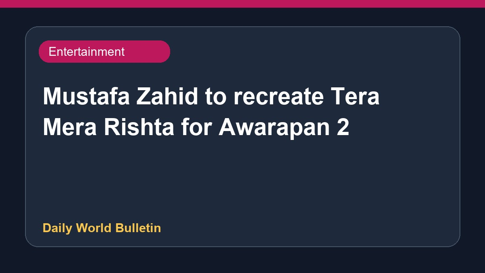

Mustafa Zahid to recreate Tera Mera Rishta for Awarapan 2

Pakistani singer Mustafa Zahid is reportedly set to record a remake of the popular track Tera Mera Rishta for the upcoming film Awarapan 2, starring Emraan Hashmi. According to various media reports, this development comes amidst the ongoing discussions regarding the ban on Pakistani artists working in the Indian film industry. Sources indicate that the lyrics of the original song have undergone certain changes for the new version. Further details regarding the official release and the music album remain awaited as updates emerge from entertainment circles.
Original source: Entertainment Sources
Mustafa Zahid to recreate 'Tera Mera Rishta' for 'Awarapan 2' despite the ban on Pakistani artists? - timesofindia.indiatimes.com ↗
Mustafa Zahid to recreate 'Tera Mera Rishta' for 'Awarapan 2' despite the ban on Pakistani artists? - timesofindia.indiatimes.com ↗
Related News
 Entertainment
EntertainmentThe Odyssey crosses USD 1 billion at the global box office
 Entertainment
EntertainmentCharlie Chauhan Marries Cricketer Ramandeep Singh In Private Ceremony
 Entertainment
EntertainmentActor Avika Gor Hospitalised After Dengue Diagnosis
 Entertainment
Entertainment